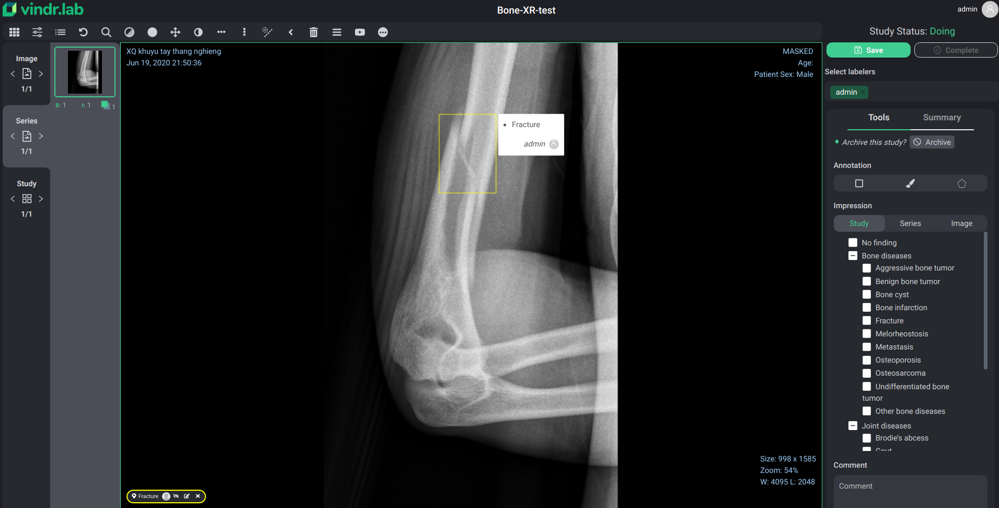

VinDr Lab - Data Platform for Medical AI

What is VinDr Lab ?
VinDr Lab is a web-based platform for medical image annotation. It has been developed to remove the ground-truth barrier AI teams met to build meaningful medical AI applications. VinDr Lab provides a high-level web-interface equibbed with advanced annotation tools and project management features.
Features
Project management
-
Manage full medical data cycle at study level
-
Control workflow with blind and/or open annotating
-
Track project progress and status of each task
Label management
-
Customize preset label groups or create a new one
-
Allow hierarchical labels
-
Arrange the order of labels appearing to labelers
Advanced annotation tools
-
Annotate with Bounding Box, Polygon, Brush
-
Elaborate annotations with notes and comments
Task management
-
Re-assign tasks if unsatisfactory
-
Monitor the distribution of labels in a project
-
Control versions of exported labels
Where to next?
Check out these helpful links:
- Deploy the system and try? Check our Getting Started
- How to use VinDr Lab to label data? Go to User Guide
- Report a bug, suggest new feature, please check our Development Guide and Github